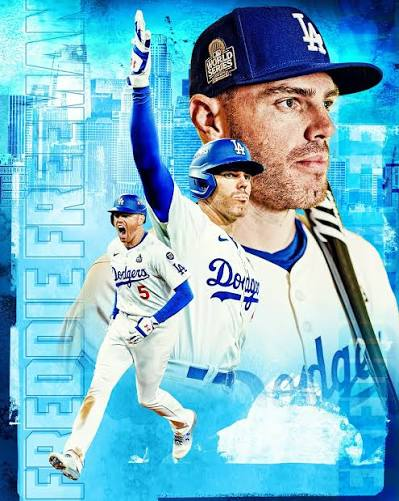
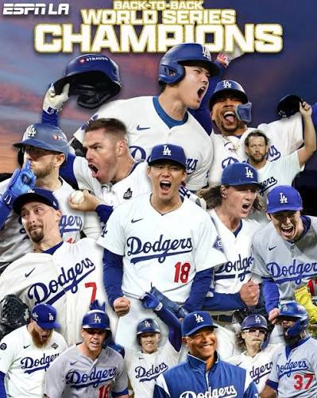

Gabriella Gonzalez's Dodgers Obsession Page


-
I am the biggest L.A. Dodgers fan, and I go to the Dodgers' Fourth of July
game every year. My favorite player is first baseman Freddie Freeman.
-
I absolutely love the L.A. Dodgers! I have been watching them play since
I was little, and I have gone to over a dozen Fourth of July games.
-
My favorite player is Freddie Freeman. He is a first baseman and one of
the best hitters in baseball.
-
The Dodgers have won a total of 8 World Series championships.
-
The team was named the Dodgers in 1895 because Brooklyn residents had to
dodge fast-moving trolley cars.
-
Before settling on Dodgers, the team went through several nicknames,
including the Grays, Bridegrooms, Superbas, Robins, and even "Dem Bums."
-
Babe Ruth is one of the most famous baseball players in history, although
he did not play for the Dodgers.